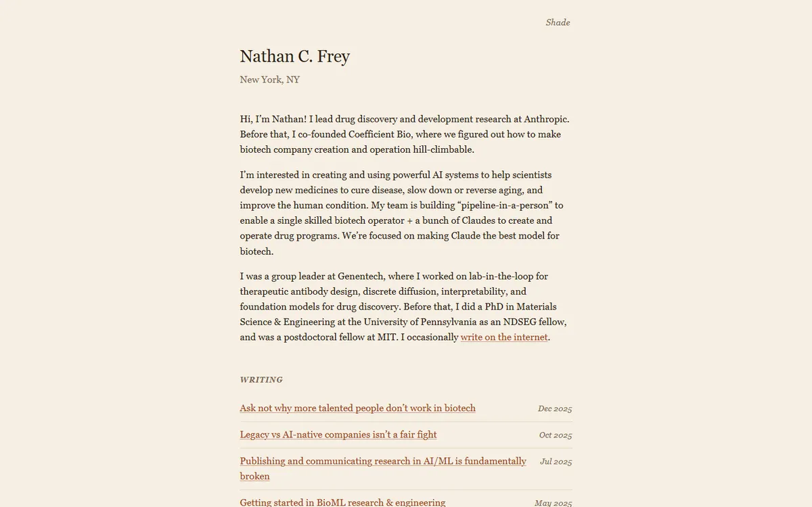

Nathan C. Frey
A private press colophon: one serif, espresso ink on parchment, and a column of sienna links ruled like a ledger.

Checked against the rendered page. Section labels are italic uppercase with tracking, not small caps as the selection note says. First computed_style run was contaminated by a concurrent run on the same port and was redone.
Why it is here
Restrained typographic page on a cream ground. A narrow measure, italic small-caps section labels and right-aligned dates make it read like a well-set book page.
Overview
Color Palette
Typography
Charter stack
Nathan C. Frey, generative models for protein design
Abstract · Method · Results · BibTeX — 0123456789
Spacing & Shape
Page Modules
Guidelines
More like this

Amir Bar
A clean faculty prospectus in Imperial blue: Inter on white, pill links, and paper cards that lift a few pixels when you reach for them.

Christoph Feichtenhofer
A conference-hall banner in Facebook blue, then a long ledger of papers in red ink, green venues and justified grey abstracts.

David Novotny
A harbour at dusk beside a quiet reading room: a fixed teal-to-midnight panel with right-aligned contact lines, and soft grey text with tangerine links on white.

Jaeyeon Kim
A quiet seminar handout in light Roboto, where one red-highlighted question and a row of mint tags are the only raised voices.

Jonathan Shafer
A keynote opening slide: one full-bleed slate-blue field, a ringed portrait, a 108px name and a centred paragraph you read from across the room.

Junyang Lin
A quiet researcher's folio on warm paper: Garamond headings, teal small labels and hairline-ruled entries.